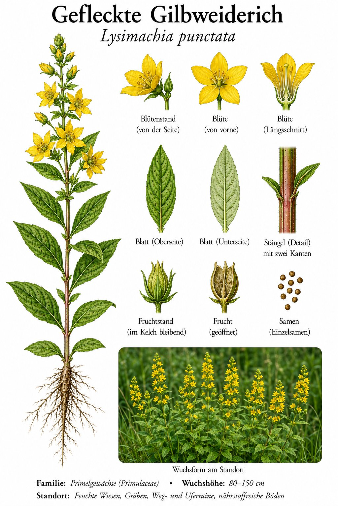

Sonnengelbe Quirle — der Gartenflüchtling, den man so schnell nicht wieder loswird.

Etagenweise Gelb
Die leuchtend gelben Blüten sitzen in dichten Quirlen rund um den Stängel, Etage über Etage. Schaut man genau hin, tragen die Blütenblätter feine dunkle Pünktchen — daher „punctata“. Eine Bienenweide, die ganze Beete zum Leuchten bringt.
Aus dem Beet in die freie Wildbahn
Eigentlich stammt die Art aus Südosteuropa und Kleinasien und kam als Zierstaude in unsere Gärten. Über unterirdische Ausläufer breitet sie sich kräftig aus — erst im Beet, dann über den Zaun in Gräben und an Wegränder. Gärtnerinnen kennen das Dilemma: schön, aber kaum zu bändigen.
Wissenswertes & Merksätze
Erkennungszeichen
60–100 cm hoch; goldgelbe, fünfzählige Blüten in Quirlen in den oberen Blattachseln. Blätter gegen- bis quirlständig, fein punktiert.
Des Gärtners Freud und Leid
„Einmal gepflanzt, nie wieder los“ — so seufzen viele über den Gold-Felberich. Für Insekten ist das ein Glücksfall, für den ordentlichen Staudengarten manchmal eine echte Geduldsprobe.